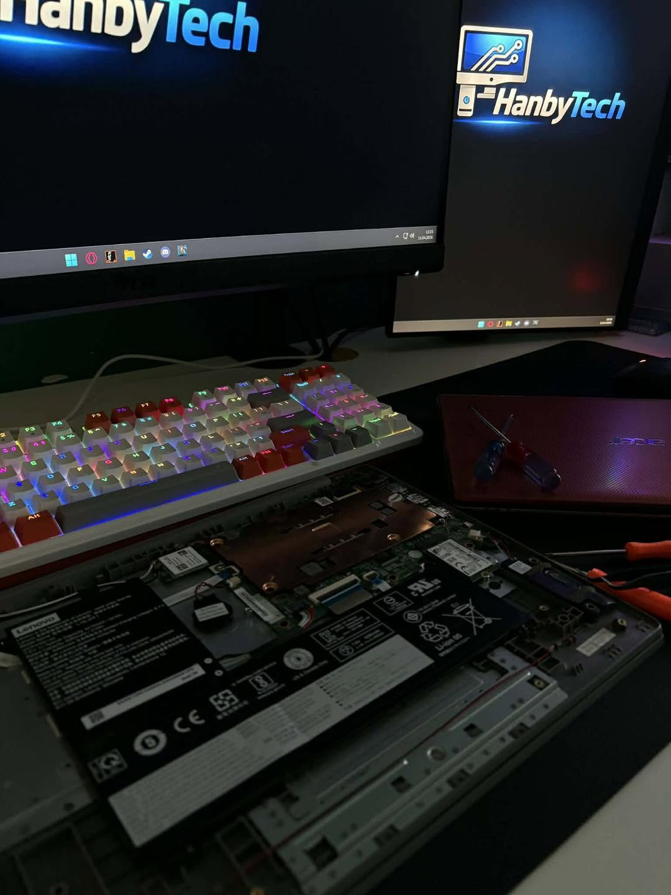
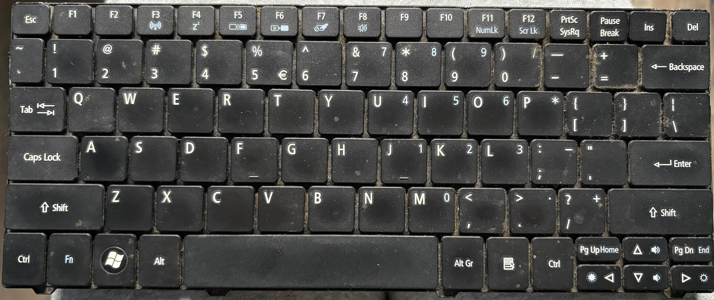
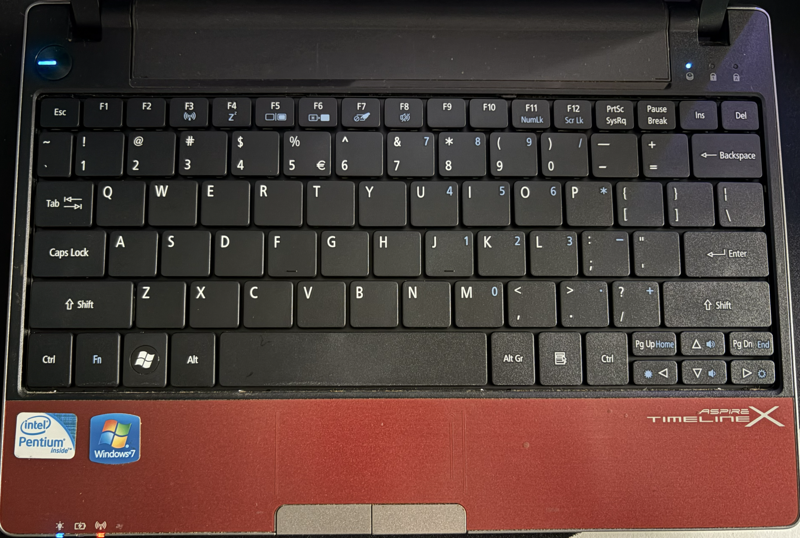

REALIZACJA / 01
NAPRAWA I ODZYSKIWANIE
LENOVO — ZALANY LAPTOP
- Podjęta została próba odzyskania danych z zalanego laptopa.
- Udało się odzyskać dane, które były możliwe do odzyskania.
- Pamięć eMMC była poza moim obecnym zakresem usług, dlatego jej odzyskiwanie nie było wykonywane.
ACER — ZAPOMNIANE HASŁO
- Format systemu
- Instalacja nowego systemu
- Czyszczenie sprzętu
- Wymiana klawiatury
LENOVO
ZALANY LAPTOP
ACER
ZAPOMNIANE HASŁO
ODZYSKIWANIE DANYCH
ODZYSKANO MOŻLIWE DO ODZYSKANIA DANE
ZAKRES PRAC
ODZYSKIWANIE DANYCH
NAPRAWA I SERWIS
NAPRAWA I SERWIS